llm-context · visual guide
Page 4 of 7
Concept 04
Separating “looks related” from “can answer”

Production versus test evidence

Task-aware structural qualification

Score-preserving reranking

Selecting graph roots

Breadth without unbounded traversal
← Retrieval
Next · Graph context →